class: center, middle # EE-463 STATIC POWER CONVERSION-I # Controlled Rectifiers ## Ozan Keysan ## [keysan.me](http://keysan.me) ### Office: C-113 <span class="meta">•</span> Tel: 210 7586 --- # Thyristor Rectifiers -- - ## HVDC Transmission Systems -- - ## DC Motor Drives -- - ## Traction Applications -- - ## Industrial Loads (Welding, Heating etc) --- # Thyristor Rectifiers -- ## General Schematic 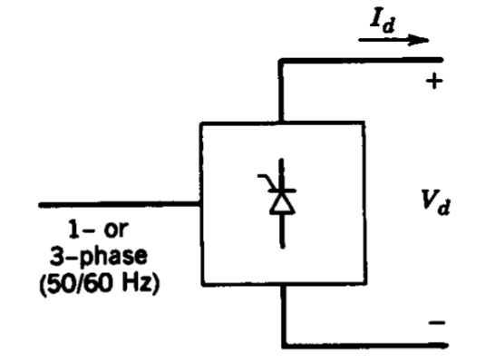 --- # Thyristor Rectifiers -- ## Operating Quadrants 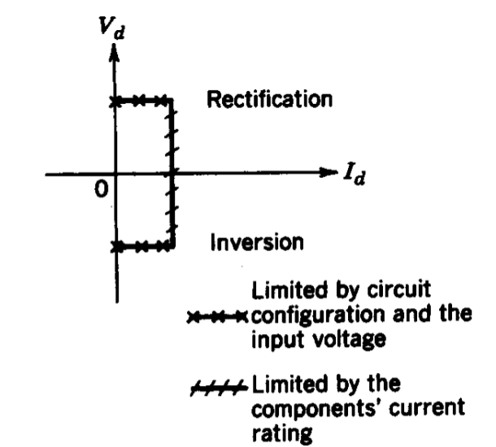 ### Capable of supplying negative Vd (Q4, Inversion) --- # Simple Circuits -- ## Thyristor with R load 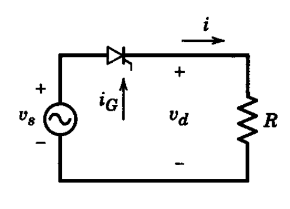 ### Can you plot the voltage output? --- # Simple Circuits ## Thyristor with R load 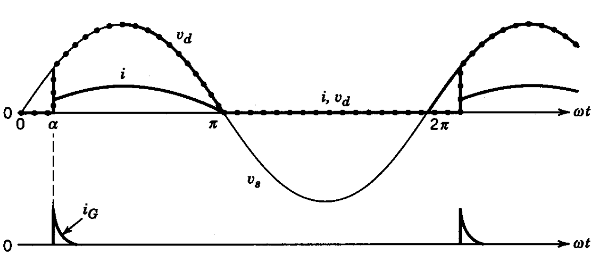 --- # Simple Circuits ## Thyristor with RL load 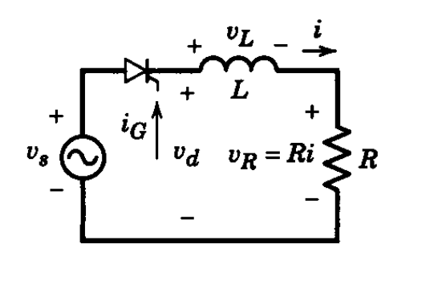 ### Can you plot the voltage output? --- # Simple Circuits ## Thyristor with RL load 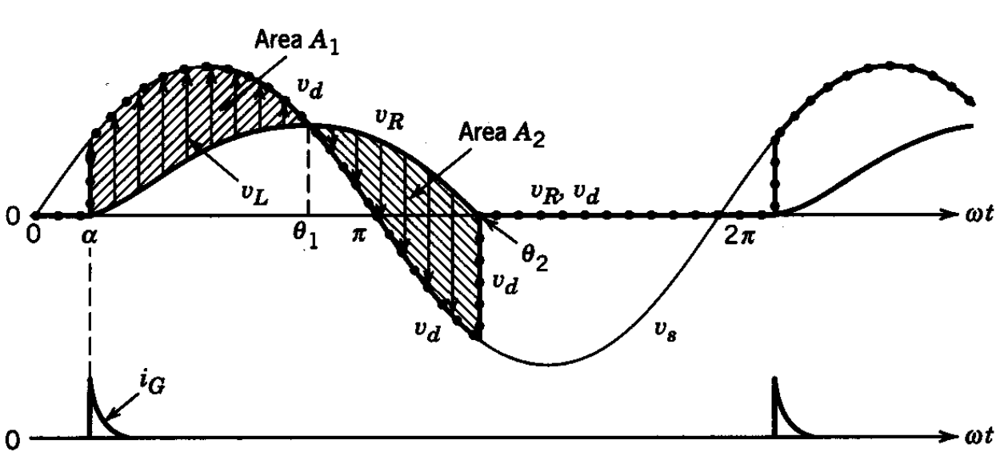 --- # Simple Circuits ## Load with DC Source 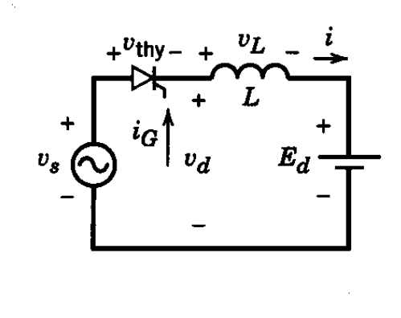 ### Can you plot the voltage output? --- ## Load with DC Source 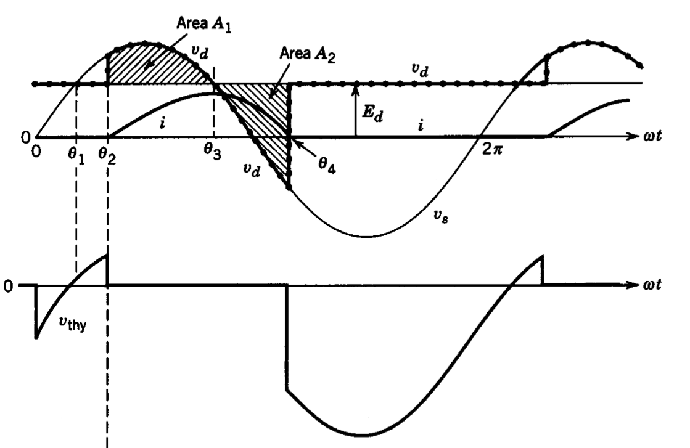 --- ## Thyristor with RL load ## but let's add a freewheeling diode -- 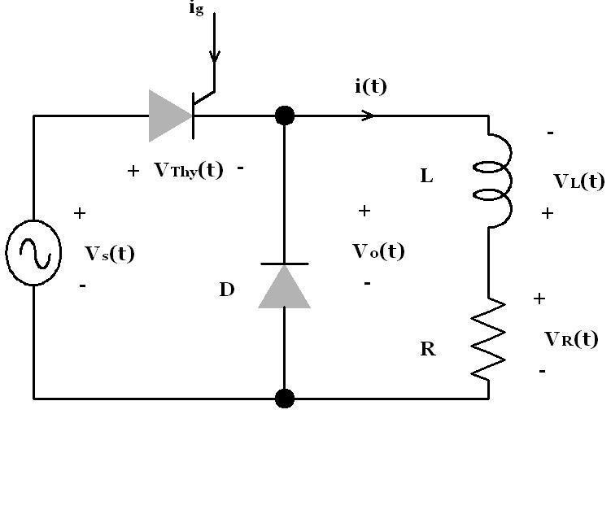 ## What are the differences? --- ## Thyristor with freewheeling diode -- 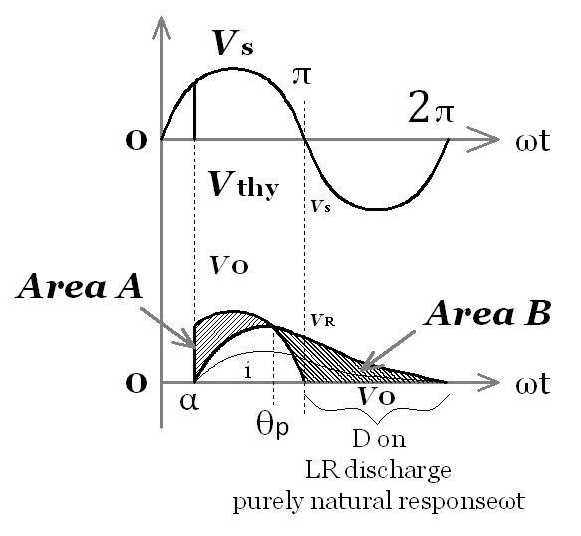 --- # Single Phase Thyristor Rectifier -- 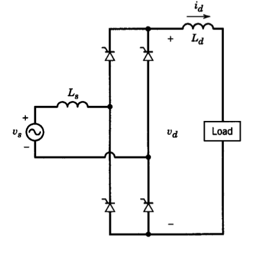 --- # Single Phase Thyristor Rectifier ## Ideal Case 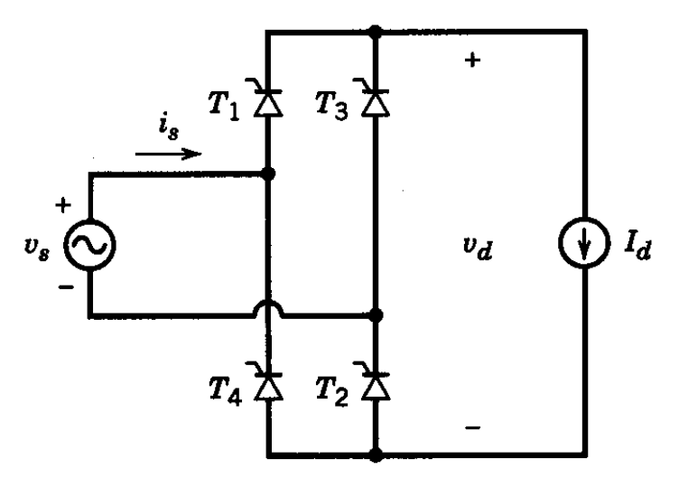 ### Can you plot the output voltages? --- ## It is identical to diode rectifier with \\(\alpha=0\\) -- 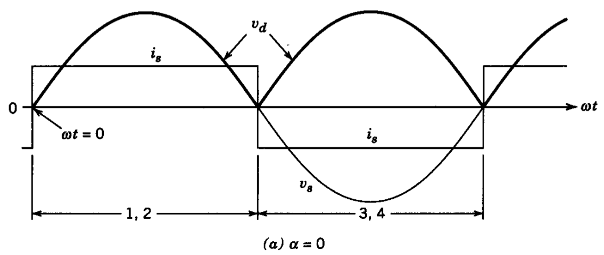 --- ## What about with a large firing angle? -- 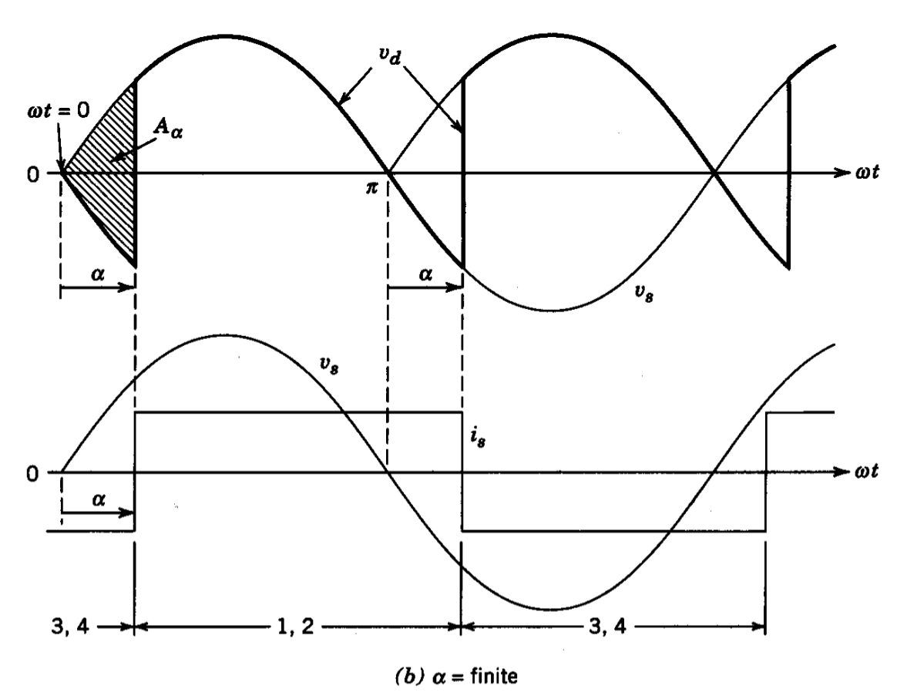 --- ## How can you calculate the average voltage? -- ## \\(Vd_\alpha= \dfrac{2\sqrt{2}Vs}{\pi} cos(\alpha)\\) -- - ### \\(\alpha = 0 \rightarrow\\) Diode rectifier -- - ### \\(\alpha < \pi/2 \rightarrow Vd >0\\) -- - ### \\(\alpha > \pi/2 \rightarrow Vd < 0\\) --- # Operating Modes 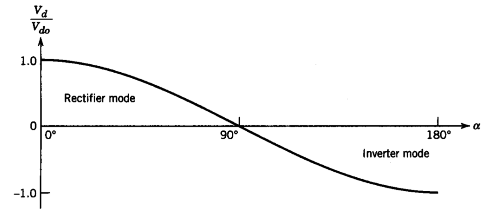 --- # Power Flow -- ### \\(P = \dfrac{1}{T}\int p(t) dt\\) -- ### \\(P = I_d \dfrac{1}{T}\int v_d(t) dt = 0.9 V_s I_d cos(\alpha)\\) --- # Line Current 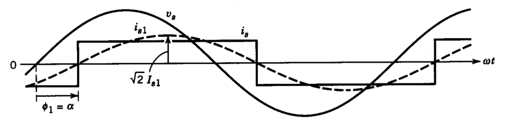 ### Shifted by \\(\alpha\\), but still a square wave -- ## Harmonics, THD, I1? -- ## What about PF, DPF? --- ## Real Power, Apparent Power -- <img src="./images/ee463/thyristor_power.png" alt="Drawing" style="width: 750px;"/> ### [MultiSim](https://www.multisim.com/content/kRQKTtG5FCPiYqpQ89p5jD/controlled-rectifier/open/) --- ## Single Phase Rectifier with Resistive Load 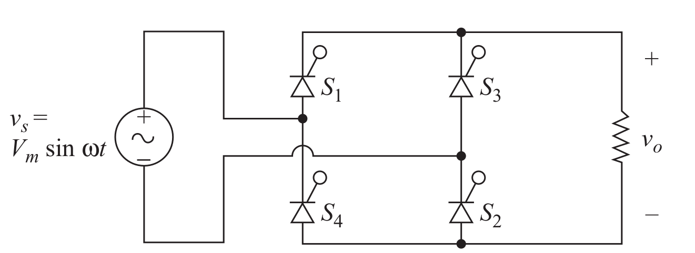 ### Voltage Waveform? --- ## Single Phase Rectifier with Resistive Load 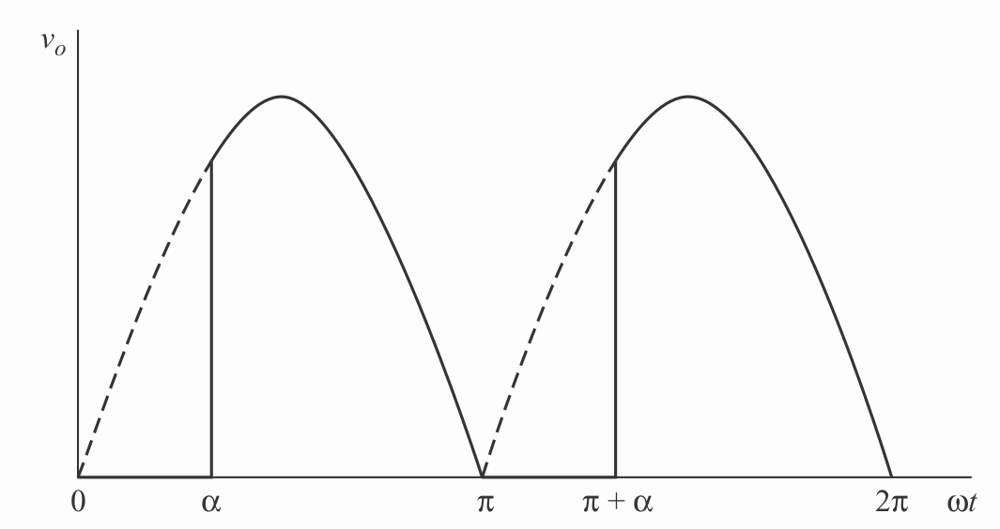 -- ### Average Voltage? --- ## Single Phase Rectifier with Resistive Load ### \\(Vd_\alpha= \dfrac{\sqrt{2}Vs}{\pi} (1+ cos(\alpha))\\) --- ## Single Phase Rectifier with R-L Load (Continuous Current) 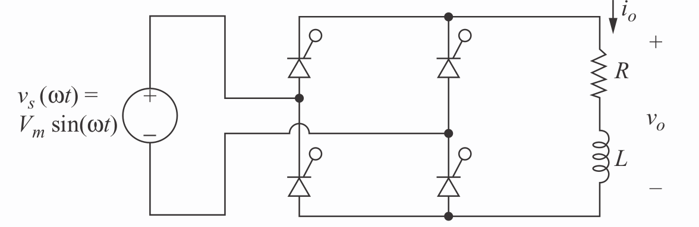 --- ## Single Phase Rectifier with R-L Load (Continuous Current) 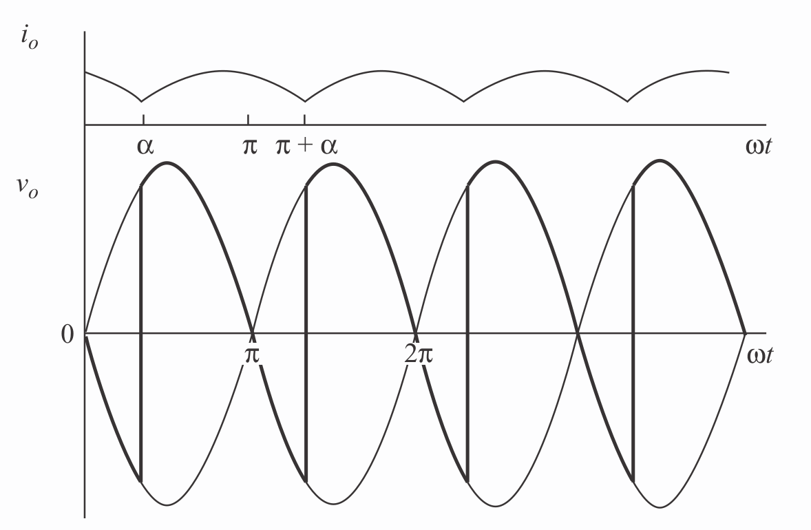 --- ## Single Phase Rectifier with R-L Load (Discontinuous Current) 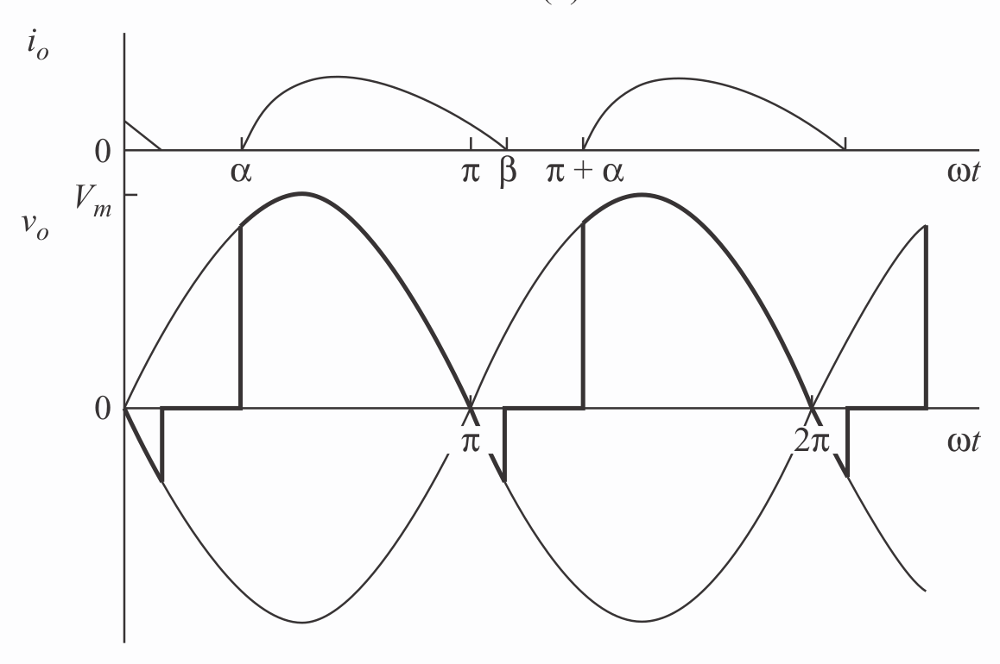 --- ## Single Phase Rectifier with Freewheeling Diode -- <img src="http://lh4.ggpht.com/_iakZ3FdExeg/TdnH76eDk0I/AAAAAAAABHs/Q2DUaT227YU/EEEbold99_thumb2.jpg?imgmax=800" alt="Drawing" style="width: 600px;"/> ## Can you plot the voltage, current waveform? -- ## What are the advantages, disadvantages? --- # How can you make this circuit cheaper? <img src="http://lh4.ggpht.com/_iakZ3FdExeg/TdnH76eDk0I/AAAAAAAABHs/Q2DUaT227YU/EEEbold99_thumb2.jpg?imgmax=800" alt="Drawing" style="width: 600px;"/> --- # Full Bridge Half Controlled Rectifier -- <img src="http://lh3.ggpht.com/_iakZ3FdExeg/TdrTo-QlQrI/AAAAAAAABHw/167kB105yJw/EEEbold10013.jpg?imgmax=800" alt="Drawing" style="width: 600px;"/> ## D1, D2 works as freewheeling diodes -- ## Vd cannot be negative --- # Full Bridge Half Controlled Rectifier ## Alternative (Same Output) <img src="http://lh5.ggpht.com/_iakZ3FdExeg/TdrTzVkJw1I/AAAAAAAABH8/XneGHuIuHBc/EEEbold101_thumb3.jpg?imgmax=800" alt="Drawing" style="width: 600px;"/> ### D3 can be removed (depending on load, and thyristor gate signals) --- # Commutation -- ## With source side inductance (Ls) -- 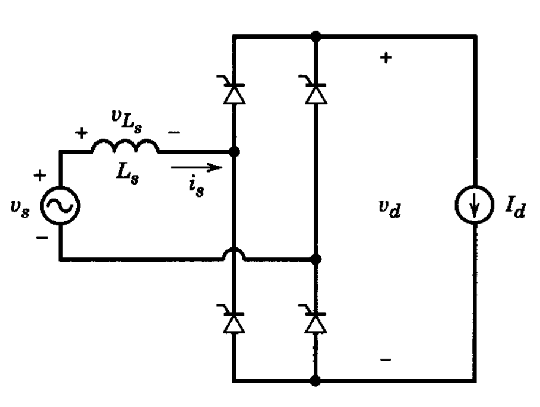 --- # Commutation -- ## Can you plot the voltage and current outputs? -- 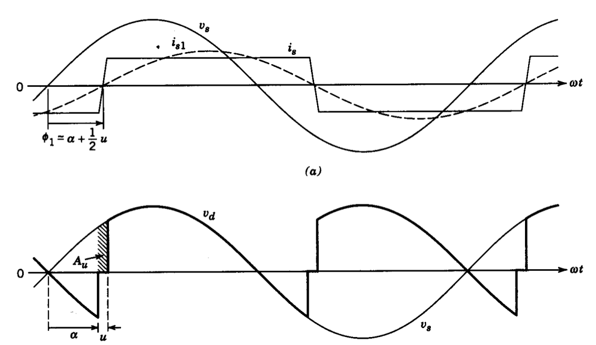 --- # Commutation ## Effect on the output voltage -- ### \\(A_u = \sqrt{2}V_s (cos (\alpha) - cos (\alpha + u)) = 2\omega L_s I_d\\) -- ### \\(cos(\alpha + u) = cos (\alpha) - \dfrac{2\omega L_s I_d}{\sqrt{2}V_s}\\) --- # Commutation ## Voltage drop due to commutation -- ### \\(\Delta V\_{du} = \dfrac{A_u}{\pi} = \dfrac{2\omega L_s I_d}{\pi}\\) -- ### \\(V_d = 0.9 V_s cos(\alpha) - \dfrac{2\omega L_s I_d}{\pi} \\) --- # Example ## Mohan Ex. 6.1 --- ## Practical Thyristor Converter -- ### Consider a case as a DC motor drive -- 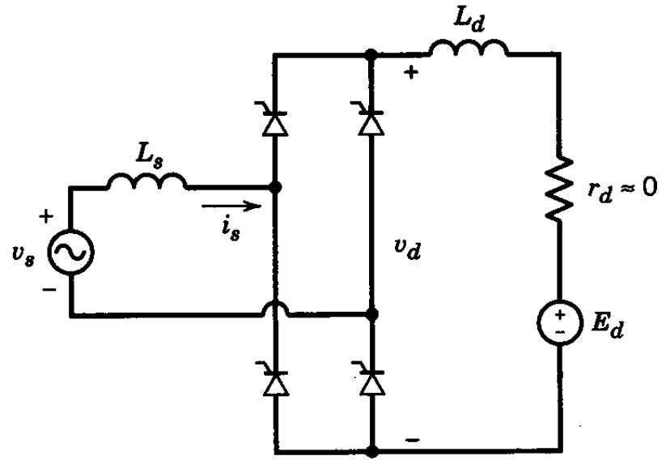 --- ## Practical Thyristor Converter ## Continuous Conduction (id is always > 0) -- 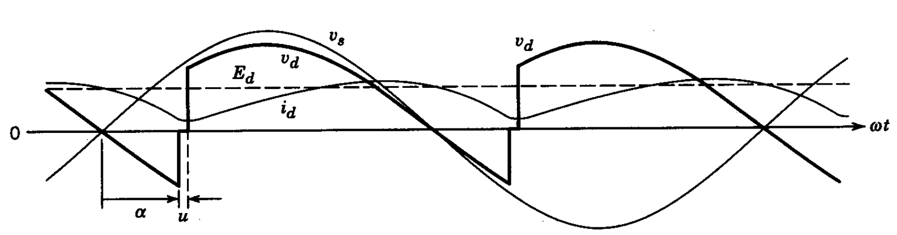 -- ### Average voltage with commutation? -- ### \\(V\_d \approx 0.9 V\_s cos(\alpha) - \dfrac{2\omega L\_s I\_{d,min}}{\pi} \\) --- ## Practical Thyristor Converter ## Continuous Conduction (id is always > 0) ### Average Current? -- ### \\(I\_d = \dfrac{V_d - E_d}{r_d} \\) --- ## Practical Thyristor Converter ### What happens if Id is small? --- ## Practical Thyristor Converter ## Discontinuous Conduction 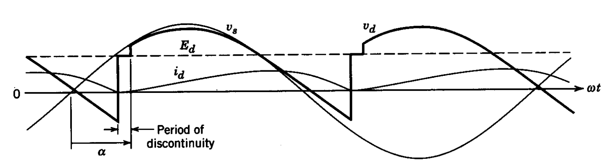 --- ## Practical Thyristor Converter ## Discontinuous Conduction 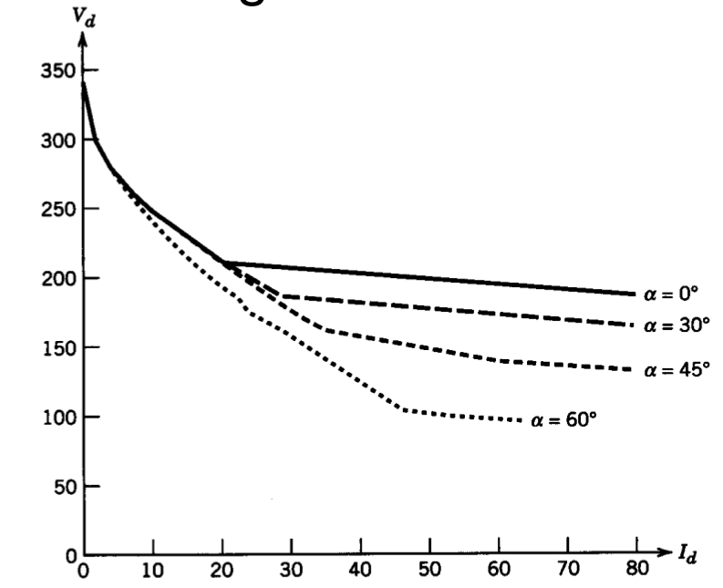 --- # Inverter Mode -- ## 90 < Firing Angle < 180 -- ### Average power<0 (Power flows from DC to AC) ### Only with active power source on DC side --- # Inverter Mode ## 90 < Firing Angle < 180 <img src="./images/ee463/thyristor_inverter_mode.png" alt="Drawing" style="width: 800px;"/> --- # Inverter Mode ## Thyristor Voltage -- 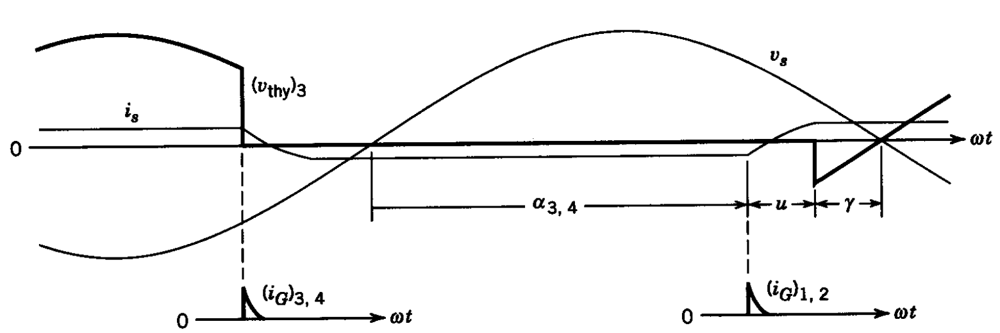 -- ## Extinction Angle (\\(\gamma = 180 - (\alpha + u)\\)) -- ### Extinction time should be larger than thyristor turn-off time (\\(t_q\\))! --- ## You can download this presentation from: [keysan.me/ee463](http://keysan.me/ee463)